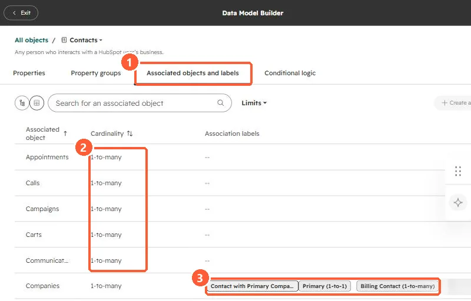

Short answer
Association labels describe a relationship, for example a contact labeled Billing Contact on a company. See them in the Data Model Builder, on the Associated objects and labels tab, which lists each associated object with its cardinality and labels. HubSpot allows up to 50 labels per object pair. A label is single (Colleague) or paired (Manager and Employee), and a pair counts as one. Labels can be used on records and in segments, workflows, custom reports, imports, and the API. They need Professional or Enterprise, and creating them needs Super Admin.
1. The associations tab
From Contacts settings, click Manage Contact associations. It opens the Data Model Builder on the Associated objects and labels tab. I have blurred a test label in my demo.


- Cardinality. Each associated object shows a limit, such as 1-to-many. The Limits filter narrows to 1-to-1, 1-to-many, or custom.
- Labels. Contact to company in my demo has Contact with Primary Company, Primary (1-to-1), and Billing Contact (1-to-many).
2. Single and paired labels
- Single: the same word describes both sides, such as Colleague or Partner.
- Paired: each side has its own word, such as Manager and Employee, or Headquarters and Regional Office. A pair counts as one label toward the 50 per object pair.
- Each label can allow many associations or a custom number, which is how a label like Primary stays at one.
3. Where labels pay off
HubSpot lists records, segments, workflows, custom reports, imports, and the API. A segment of contacts labeled Billing Contact on customer companies is a better invoice list than a guessed job title. When you build them, keep the list short and agreed, because labels nobody uses add noise to every association.